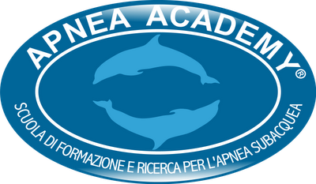

KAD (KIDS AS DOLPHINS) - BAMBINI COME DELFINI
Emozionarsi…in sicurezza
CONTENUTI:
Spesso vediamo i bambini al mare con il naso all’ingiù e i piedini che emergono a pelo d’acqua, intenti a raccogliere conchiglie o pietre colorate. Ridono e si entusiasmano perché hanno potuto vedere il pesciolino “Nemo” tanto evocato nei corsi di nuoto.
Ci sorprende che stiano così a loro agio sott'acqua perché dimentichiamo che è un'esperienza già provata nel grembo materno e fa parte quindi della nostra memoria genetica di mammiferi che deve essere solo risvegliata. Il nostro desiderio è però che la affrontino senza rischi, in completa sicurezza.
Oggi questo è possibile con KAD (Kids As Dolphins), corso della didattica Apnea Academy (la scuola di Umberto Pelizzari) che li guida nella meravigliosa dimensione del mondo sommerso. Il corso è organizzato da ClubApnea e tenuto da istruttori abilitati all'insegnamento KAD.
Con KAD, attraverso il gioco, con percorsi stimolanti e colorati, il bambino impara a conoscere meglio l'ambiente subacqueo, a muoversi con e senza attrezzatura e a fare la manovra di compensazione (tecnica per compensare la pressione dell'acqua e non farsi male alle orecchie). Dal gioco al rilassamento, dal controllo della respirazione al riconoscimento dei pesci, tutto viene utilizzato e idoneamente proposto per stimolare lo spirito acquatico dei bambini.
Immergendosi sempre con il compagno e lavorando in gruppo, attraverso la simulazione di situazioni da risolvere, il bambino impara le basi del salvamento e matura un senso di responsabilità, organizzazione e affidamento reciproco.
Si affrontano poi nozioni di base sul mare e sul lago che stimolano la conoscenza e il rispetto di questi ambienti.
Al termine delle lezioni in piscina, per i bambini tra i 10 e i 13 anni, l’avventura continua con il battesimo dei piccoli delfini in mare.
In una giornata da passare fra gli scenari naturali più suggestivi delle nostre coste, i bambini hanno l'occasione di provare quanto appreso in piscina: seguiti dall'istruttore, fanno snorkeling, tuffi, provano la manovra di compensazione e vivono da vicino l'ambiente marino simulato nelle lezioni in piscina.
Il corso termina con la consegna dell’attestato di partecipazione e del brevetto KAD, rilasciato da Apnea Academy.
KAD è rivolto a tutti i bambini che abbiano un sufficiente livello natatorio e prevede 2 corsi distinti per bambini di età compresa tra i 7 e i 9 anni e dai 10 ai 13 anni.
DURATA E FREQUENZA:KAD 7-9 anni: 2 lezioni di teoria da 20 minuti e 10 lezioni in piscina (monosettimanali) da 50 minuti. KAD 10-13 anni: 3 lezioni di teoria da 20 minuti e 10 lezioni in piscina (monosettimanali) da 50 minuti. Due immersioni al mare.
Il rapporto massimo istruttore/allievi è di 1/8 per consentire un buon controllo e un alto livello di qualità del lavoro.
in piscina occorrono pinne, maschera, tubo e mutino. In mare occorrono muta con cappuccio e cintura dei piombi con zavorra. Possibilità di noleggio dell’attrezzatura.
CERTIFICATO MEDICOÈ richiesto il certificato medico di idoneità all’attività in acqua.
INFO e ISCRIZIONI:l’iscrizione si effettua contattando la Segreteria ai seguenti recapiti: tel. 3496648914 – email: segreteria@clubapnea.org
LUOGHI e DATE CORSI:data e luogo dei prossimi corsi KAD sono nel calendario delle attività, alla sezione “news” del sito Clubapnea.
CLUB APNEA© 2013